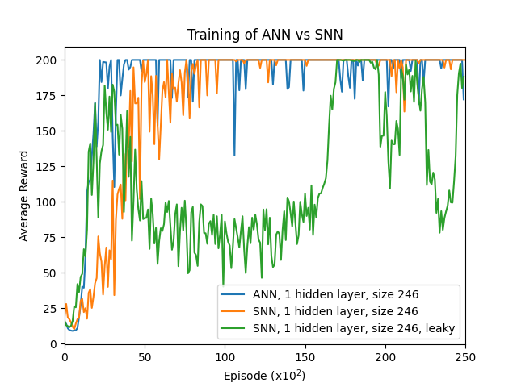
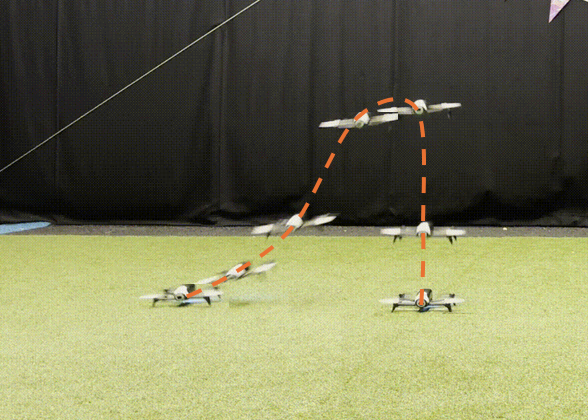
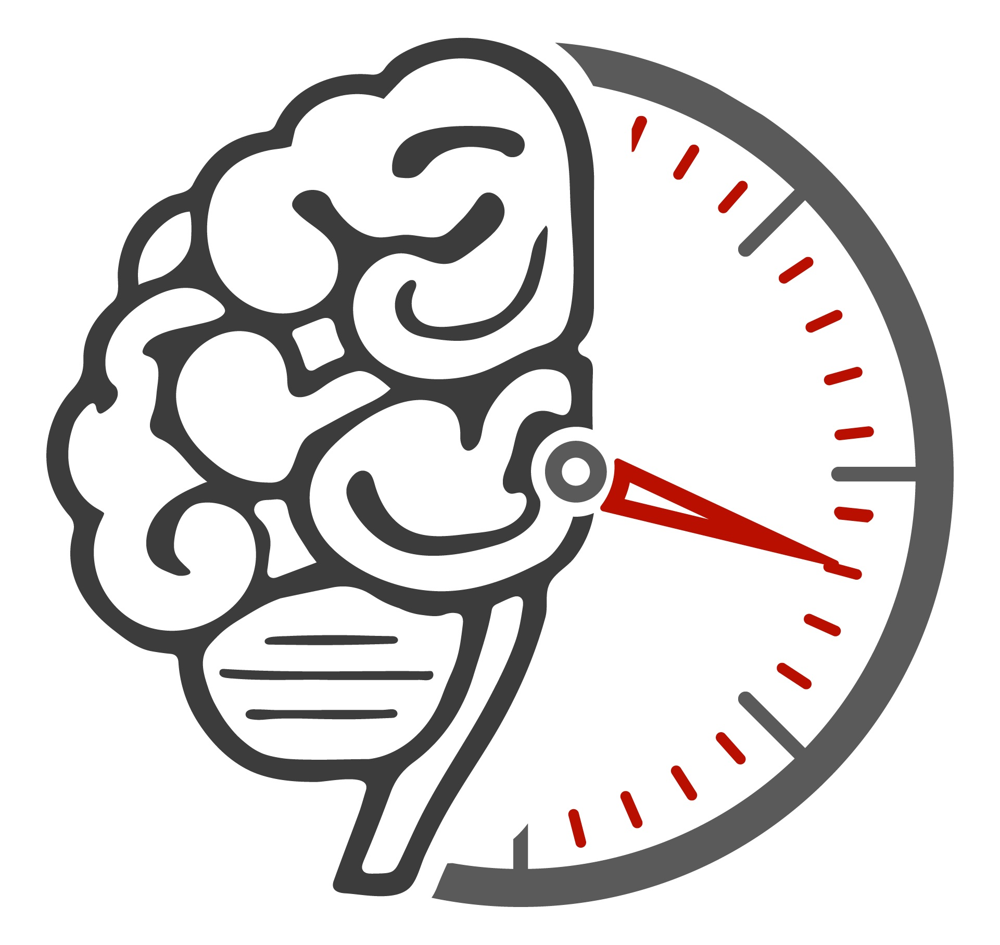
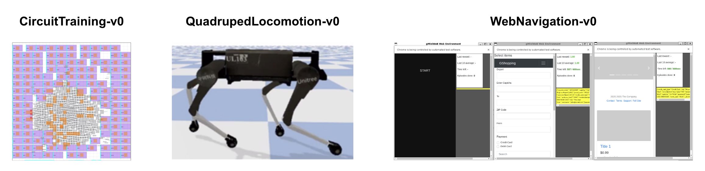

New
Presenting at NeurIPS 2025
Korneel Van den Berghe
ML Robotics Engineer & Researcher
Building intelligent agents that interact with the physical world. 4+ years of experience in reinforcement learning, autonomous systems, and neuromorphic computing.
Currently AI Engineer at Harbor AI in NYC, developing models for dynamic insurance optimization. Previously visiting researcher at Harvard's Edge Computing Lab.
Research & Development
Projects
Exploring the intersection of neuromorphic computing, reinforcement learning, and autonomous systems.




NeurIPS 2025
Adaptive Surrogate Gradients for SNNs
A 3-part series on training spiking neural networks with adaptive surrogate gradients. Covers gradient effects, sequential RL, and real-world deployment.
Background
Curriculum Vitae
Experience in ML research, robotics engineering, and aerospace systems.
Experience
Lead ML Researcher & Engineer
Aug 2024 – PresentHarbor AI
New York City, USA
- Leading RL models for dynamic insurance price optimization
- Interpretability research for explainable risk analysis
- Building MLOps infrastructure for $100M+ valuation scale
Visiting Researcher, ML
Aug 2023 – Jul 2024Edge Computing Lab, Harvard University
Boston, USA
- Co-authored and maintain NeuroBench benchmarking framework
- Contributed to A2Perf RL benchmarking suite
- RL-based pruning for TinyML drone controllers
ML Researcher
Aug 2020 – Dec 2024Honours Programme MSc, TU Delft
Delft, NL
- Neuromorphic MAV controllers using event data and optic flow
- Deep Q-learning for low-power RL on edge devices
- Topology optimization for compliant wing morphologies
Structural & Control Systems Engineer
Sep 2022 – Dec 2023AeroDelft (Hydrogen Aircraft)
Delft, NL
- Control systems in C++ for first student hydrogen aircraft
- CAD to flight-ready hardware prototyping
Education
M.Sc. Aerospace Engineering (Honours)
2022 – 2024TU Delft
Specialization: Control and Simulations
B.Sc. Aerospace Engineering (Honours)
2019 – 2022TU Delft
Publications
Adaptive Surrogate Gradients for Sequential RL in Spiking Neural Networks
Oral Presentation at NeurIPS 2025
NeuroBench: Advancing Neuromorphic Computing through Collaborative Benchmarking
Nature Communications, NICE 2024
NeuroBench: Closed Loop Benchmarking
Neuromorphics Netherlands 2024, ASPLOS 2025
A2Perf: Benchmarking Autonomous Agents in Real-World Domains
Under review, AAMAS 2026
Control with SNNs Trained with RL Using Surrogate Gradients
ICNCE 2024
Skills
Reinforcement Learning
Neuromorphic Computing
Machine Learning
Autonomous Systems
TinyML
Edge Computing
Python
C++
PyTorch
MLOps
Control Systems
Robotics